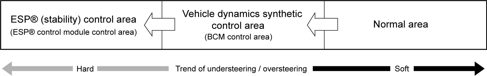
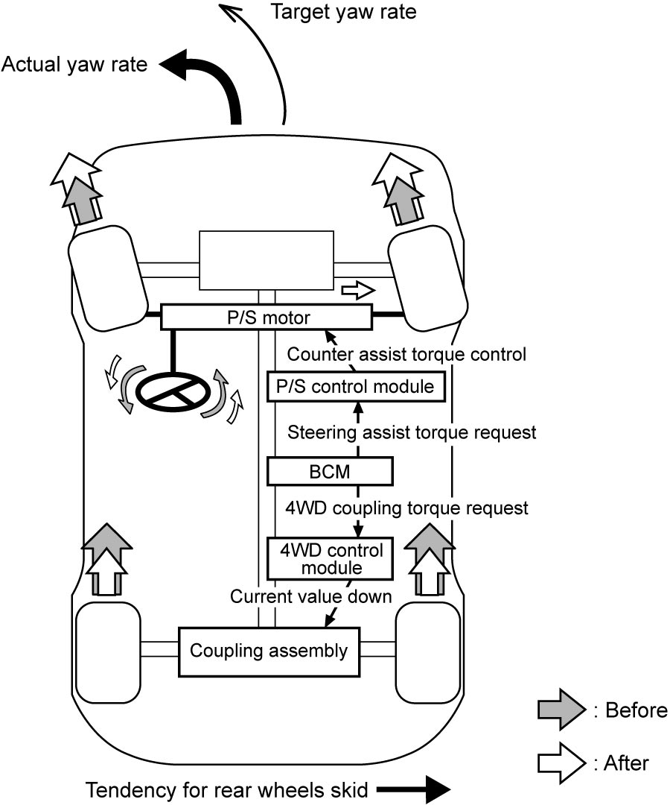
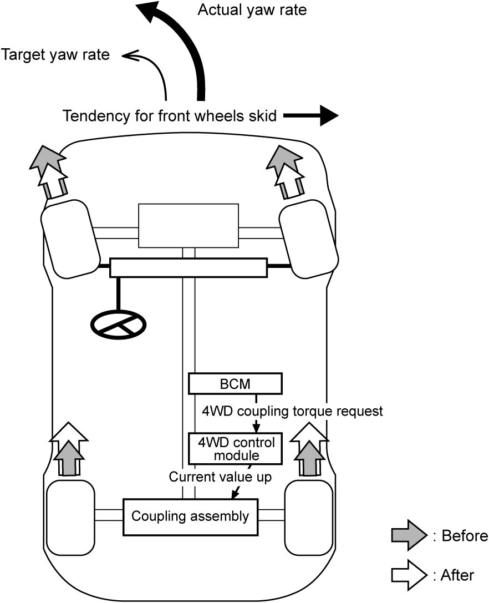

10B
| Description of Vehicle Dynamics Synthetic Control |
NOTE:
•Vehicle dynamics synthetic control is not a device which increases the limit of braking, traction and steering performance.
There is a limit in securing vehicle stability by vehicle dynamics synthetic control.
•Check that all tires are of the specified size, maker and brand, have the same tread pattern, and have the same air pressure and degree of wear.
•When driving a vehicle with tire chains or a temporary tire installed, vehicle dynamics synthetic control may not operate normally.
There is a limit in securing vehicle stability by vehicle dynamics synthetic control.
•Check that all tires are of the specified size, maker and brand, have the same tread pattern, and have the same air pressure and degree of wear.
•When driving a vehicle with tire chains or a temporary tire installed, vehicle dynamics synthetic control may not operate normally.
Description
•Vehicle dynamics synthetic control is a system for inhibiting vehicle skidding during cornering. This system totally controls EPS and 4WD systems prior to activation of ESP® control, which is activated based on vehicle driving conditions judged by BCM.
•BCM calculates a driver’s target yaw rate, the target vehicle cornering speed based on the vehicle speed and the steering angle signal. It detects the degree of oversteering/understeering during cornering based on the signal difference between the target yaw rate and the actual one, and it inhibits oversteering/understeering and assists in stabilizing the vehicle. Furthermore, if the vehicle is judged to be unsteady, severe oversteering/understeering, to the degree it cannot be controlled with vehicle dynamics synthetic control, the vehicle is switched to ESP® control.
•BCM calculates a driver’s target yaw rate, the target vehicle cornering speed based on the vehicle speed and the steering angle signal. It detects the degree of oversteering/understeering during cornering based on the signal difference between the target yaw rate and the actual one, and it inhibits oversteering/understeering and assists in stabilizing the vehicle. Furthermore, if the vehicle is judged to be unsteady, severe oversteering/understeering, to the degree it cannot be controlled with vehicle dynamics synthetic control, the vehicle is switched to ESP® control.

 "Expand image")
Example: Oversteering Restraint Control
When vehicle rear wheels slide out during cornering, the actual yaw rate is higher than the target. BCM judges that oversteering, tendency for rear wheels to skid, has occurred and the following vehicle dynamics synthetic control is carried out.
BCM sends steering assist torque request to P/S control module based on oversteering level via CAN communication, and this facilitates decrease in excessive steering input by providing counter-steering assist torque to steering system. Also, on 4WD model, BCM sends 4WD coupling torque request to 4WD control module via CAN communication. This reduces the rear wheel traction torque and reduces the influence of traction force at the rear wheels, and this helps prevent oversteering.

 "Expand image")
Example: Understeering Restraint Control (4WD Model)
When vehicle front wheels slide out during cornering, the actual yaw rate is lower than the target. BCM judges that understeering, tendency for front wheels to skid, has occurred and the following vehicle dynamics synthetic control is carried out.
BCM sends 4WD coupling torque request (rear wheel traction torque increase request) to 4WD control module based on understeering level via CAN communication. This increases the rear wheel traction torque and reduces the influence of traction force at the front wheels, and this helps prevent understeering.

 "Expand image")
Example: Push-Understeering Restraint Control (4WD Model)
When vehicle shows exceeding push-understeering tendency due to 4WD, the following vehicle dynamics synthetic control is carried out.
BCM sends 4WD coupling torque request (rear wheel traction torque reduce request) to 4WD control module based on understeering level via CAN communication. This reduces the rear wheel traction torque and increases the influence of traction force at the front wheels, and this helps prevent push-understeering.